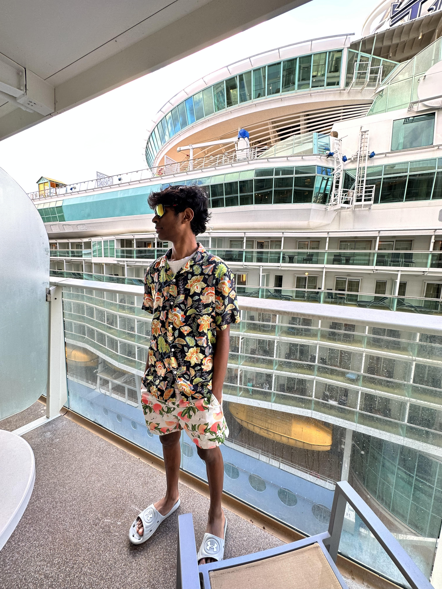
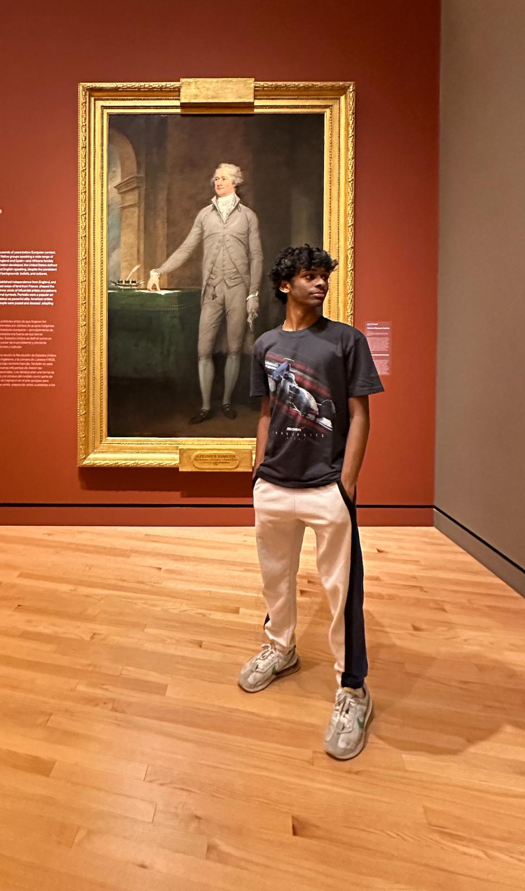
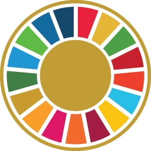
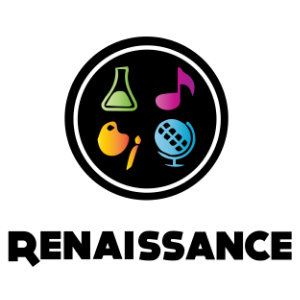
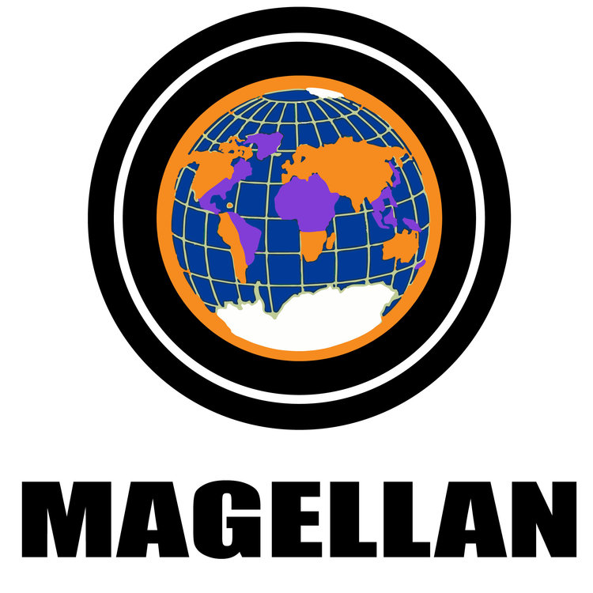
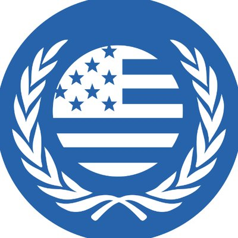
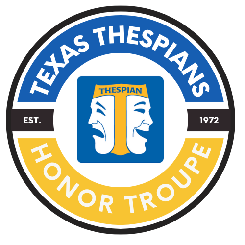
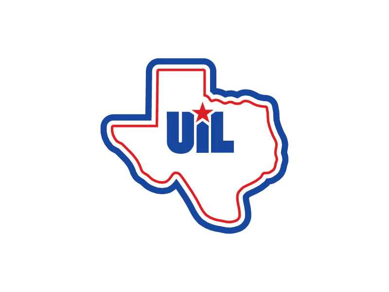
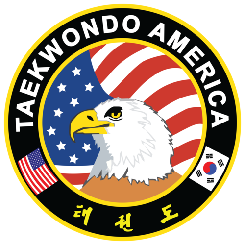
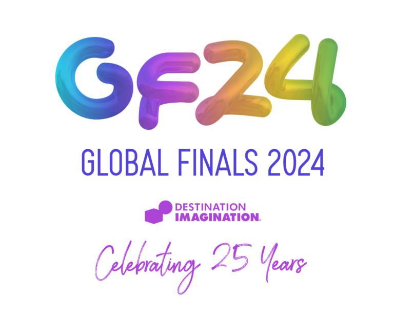

As a rising senior in Frisco High School, I am partaking in activities such as acting and debating. I have earned many state and district awards for acting, as I find this a way to express my personality and vibrancy. Additionally, I'm adequately educated in the field of Computer Science, coding, and learning Java in my Computer Science class. I also partake in a club, Destination Imagination, where I perform and work in constrained/low-state environments such as activities like improv-acting and engineering challenges. As a 1st Decided Black Belt in Taekwondo, I've honed my skills to gain skills of discipline and focus. Currently, I'm in a unique club, Independent Study and Mentorship, aiming to indulge in the realm of Real Estate and improve my financial literacy. Additionally, I manage clubs such as Lightbulb Tutoring and The American Red Cross Society. In this ISM journey, I strive to seek amicable guidance that will assist me in my Real Estate endeavors along the way.
2024 LearnToBe Tutor Corps Volunteer:
- Conducting mathematics lessons for K-12 students through IXLActor for Theatre Production Elite:
- Attended daily rehearsals in fall and winter showsISM Researcher:
- Conducted intensive research in the Real Estate field and marketKarya Siddhi Hanuman Temple Volunteer:
- Packed and labeled food packages for 600-700+ customersSocial Media Ambassador for Aid4Need:
- Advertise Aid4Need's volunteer activities through Instagram and WhatsAppVice President of Red Cross School Chapter:
- Help plan meetings and design the meeting slideshowsSDG Soldiers Non-profit Founder
Research Fellow for AEOP:
- Explore the varied STEM career paths available to me2024 AllStarCode Apprentice:
Participant in All Star Code's Summer Intensive Program, a 3 week web-development course that provides over 90 hours of computer science instruction and core skills development. Collaborated with professionals and students nationwide.2024 BigFuture Ambassador:
- Sharing the motto of BigFuture in public networks and social media networks6-year DI Veteran
- Acted in regional, state, and global competitions in a range of challengesFirst Decided Black Belt
- Learned discipline through new Karate formsMeaningful Teens Volunteer, Mind4Youth Volunteer, LEAF Volunteer
- Online tutored Ukranian and Slovakian refugees, curated mental health promotional cards for kits in heart hospitals, and packed food for the Little Elm food bank
2024 AllStarCode Summer Intensive Apprentice:
2024 AEOP Research Fellow:
2024 Unsway AI Curriculum Designer Intern:
• Explore the varied STEM career paths available to me
• Expand my understanding of what STEM encompasses and where I fit in
• Interview a STEM professional about their background and career
• Dive into research about academic resilience and how to build a STEM identity
• Participate in online discussions and webinars to connect with other high school students interested in STEM
• Practice career preparedness skills, like networking, drafting an application essay, and creating an effective resume.
2024 Mind4Youth Editorial Intern:
• Expand my knowledge on writing and editorial professionalism
• Create compelling social media content on mental health issues
• Research mental health issues/problems on a global scale to form a research article.







